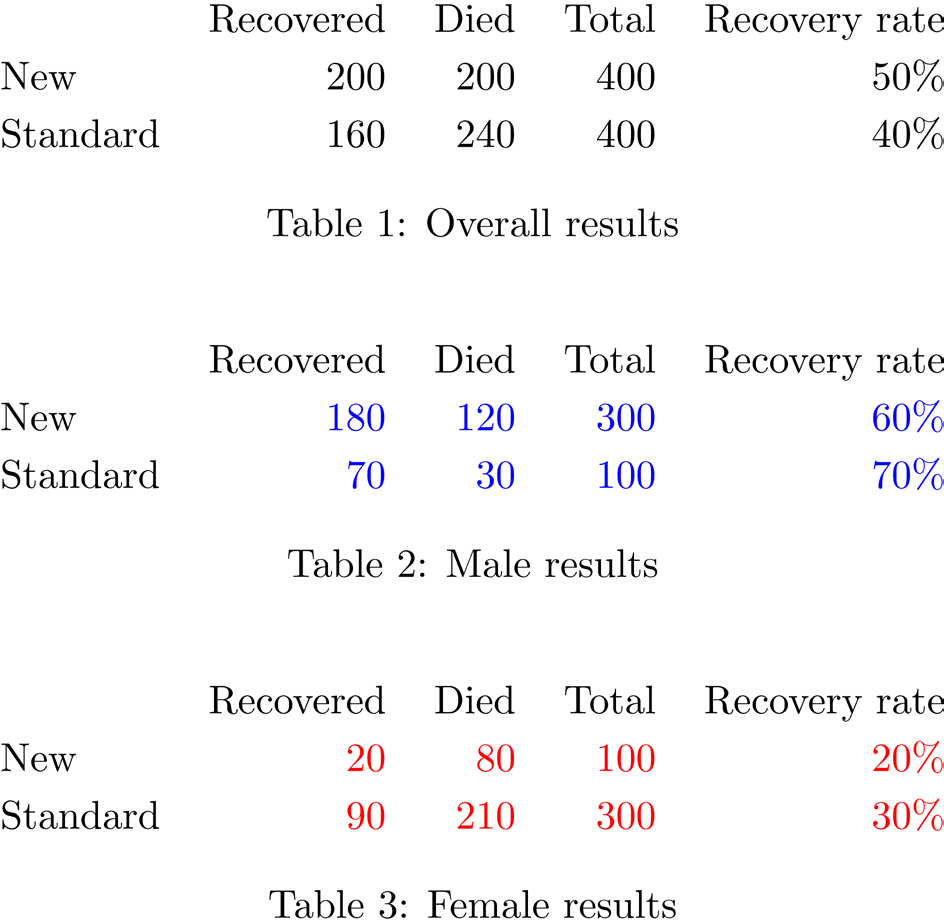
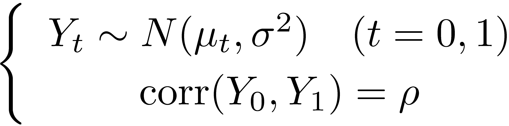
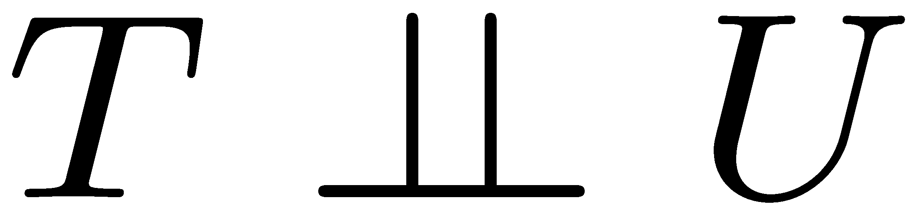
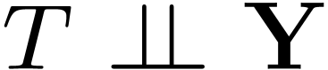
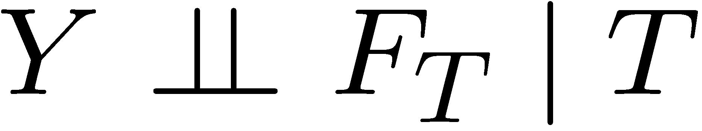

Statistical Causality
Philip Dawid
Statistical Laboratory
University of Cambridge
Statistical Causality
1. The Problems of Causal Inference
2. Formal Frameworks for Statistical Causality
3. Graphical Representations and Applications
4. Causal Discovery
1. The Problems of Causal Inference
Conceptions of Causality
• Constant conjunction
– Deterministic
• Mechanisms
– “Physical” causality
Agency
– Effects of actions/interventions
Contrast
– Variation of effect with changes to cause
Causal Queries
• If I had taken aspirin half an hour ago,
would my headache would have gone by
now?
– “Causes of Effects”, CoE
– Counterfactual
– LAW
• If I take aspirin now, will my headache be
gone within half an hour?
– “Effects of Causes”, EoC
– Hypothetical
– SCIENCE, STATISTICS
Causal Enquiry
• Experimentation (“doing”)
– To find out what happens to a system when you
interfere with it you have to interfere with it
(not just passively observe it) – George Box
• Observation (“seeing”)
– Cost
– Ethics
– Practicality
• No necessary connexion!
Problems of observational studies
An observed association between a “cause”
and an “effect” may be spurious:
– Reverse causation
– Regression to mean
– Confounding
• common cause
• differential selection
– …
Problems of observational studies
The facts about fuel (Which?, August 2007)
Mr Holloway said that a colleague of his used to
drive from London to Leeds and back, using
Shell petrol to go up there and BP fuel to drive
back. He was convinced the BP petrol gave
better fuel economy, but Ray had another
explanation: ‘I pointed out that Leeds is at a
higher altitude that London: he was going uphill
one way and downhill the other!’
Problems of observational studies
HRT and coronary artery disease
Observational research on women taking
post-menopausal hormone therapy
suggested a 40–50% reduction in coronary
heart disease.
A large clinical trial found an elevated
incidence.
Hazard ratio estimates in the observational
study were up to 48% lower than in the
clinical trial.
Problems of observational studies
Vitamin supplements and mortality
Many observational studies appeared to
indicate that antioxidant supplements
(vitamins A and E, β-carotene) reduce the
risk of disease.
Randomized controlled trials showed that
they increase mortality.
Problems of observational studies
Calcium channel blockers
Non-experimental studies suggested an
increased risk of myocardial infarction
associated with the short-acting calcium
channel blocker (CCB) nifedapine.
It took almost a decade to obtain RCT
evidence, which showed that long-acting
nifedapine is safe.

Simpson’s Paradox
Causal Inference
• Association is not causation!
• Traditionally, Statistics dealt with association
– Theory of Statistical Experimental Design and
Analysis does address causal issues
• but of no real use for observational studies
• How to make inferences about causation?
– “bold induction”, to a novel context
• Do we need a new formal framework?
2. Formal Frameworks for
Statistical Causality
Some Formal Frameworks
Probability distributions
• Potential responses
• Functional relationships
Extended conditional independence
• …
• Structural equations
• Path diagrams
Directed acyclic graphs
• …
A SIMPLE (??) PROBLEM
• Randomised experiment
• Binary (0/1) treatment decision variable
T
• Response variable
Y
Define/measure “the effect of treatment”
Probability Model (Fisher)
• Specify/estimate conditional distributions
P for Y given T = t (t = 0, 1)
t
[e.g. N(µ , σ2) ]
t
• Measure effect of treatment by change in the distribution
of Y: compare P and P
0
1
– e.g. by change in expected response:
δ = µ − µ
(average causal effect, ACE)
1
0
• Probability model all we need for decision theory
– choose t to minimise expected loss E
{L(Y)}
Y » Pt
Decision Tree
Y
Y~P
y
0
0
L(y)
T
1
Y
y
L(y)
Y~P1
Influence Diagram
T
Y
L
t
Y | T=t ~ P
L(y)
t
Structural Model
Y = µ + E
T
[e.g., E » N(0, σ2)]
(E = “error”, “effect of omitted variables”,…)
• Deterministic relationship
• Value of E for any unit supposed the
same if we were to change T from 0 to 1
• Then value of Y would change by
exactly δ = µ − µ
1
0
– individual causal effect (ICE)
Potential Response Model (Rubin)
• Split Y in two:
Y : potential response to T = 0
0
Y : potential response to T = 1
1
• Consider (for any unit) the pair Y = (Y , Y )
0
1
– with simultaneous existence and joint distribution
• Treatment “uncovers” pre-existing response:
Y = Y (determined by Y and T)
T
– other PR unobservable, “counterfactual”
• Unit-level (individual) [random] causal effect
Y − Y
– necessarily unobservable!
1
0
General Functional Model
Y = f(T, U)
(U = “unit characteristics”)
• Value of U supposed the same , independent of
value of T
– and of whether we intervene or just observe
• Formally includes:
– Structural model: U = E, Y = µ + E
T
– PR model:
U = Y, Y = YT
Potential Response Model
• Any functional model Y = f(T, U) generates a
PR model: Y = f(t, U)
t
• Any PR model generates a probability model:
P is marginal distribution of Y
(t = 0, 1)
t
t
• Distinct PR models can generate the same
statistical model
– e.g., correlation between Y and Y arbitrary
0
1
• Cannot be distinguished observationally
• Can have different inferential consequence
– can be problematic!

Potential Responses: Problems
• PR model:
• Corresponding statistical model:
NB: ρ does not enter! – can never identify ρ
– does this matter??
Potential Responses: Problems
Under PR model:
E(Y /Y ) depends on ρ
1
0
We can not estimate a “ratio” ICE
var(Y − Y ) = 2(1 − ½) ¾2
1
0
We can not identify the variance of the ICE
E(Y − Y | Y = y ) = (1 − ½) y + (½µ − µ )
1
0
1
1
1
1
0
We can not identify the (counterfactual)
ICE, after observing response to treatment
OBSERVATIONAL STUDY
• Treatment decision taken may be
associated with patient’s state of health
• What assumptions are required to
make causal inferences?
• When/how can such assumptions be
justified?
Functional Model
Y = f (T ,U )
T = treatment received
U = “unit characteristics”
– value supposed unaffected by treatment or how it
is applied
– but could influence choice of treatment T
observational dependence between T and U
Response to applied treatment t: Y = f(t, U).
t
Observational distribution of Y, given T = t,
same as distribution of Y if
t
Functional Model
U
U ~ PU
T
Y
Y = f (T ,U )
U = “unit characteristics”
– value supposed unaffected by treatment or how it
is applied
– but could influence treatment choice

Functional Model
U
U ~ PU
T ~ P
T
Y
Y = f (T ,U )
T
“No confounding” (“ignorable treatment assignment”) if
(treatment independent of “unit characteristics”)

PR interpretation (U = Y)
Y
Y ~ PY
T ~ P
T
Y
Y = Y
T
T
“No confounding” (“ignorable treatment assignment”) if
(treatment independent of potential responses)
PR interpretation (U = Y)
• Value of Y = (Y , Y ) on any unit
0
1
supposed the same in observational and
experimental regimes, as well as for both
choices of T
• No confounding: independence of T
from PR pair Y
How are we to judge this??
Statistical Decision Model
• “Treatment regime indicator” variable FT
– intervention variable
– non-random, parameter
• Values:
F = 0 : Assign treatment 0
(⇒ T = 0)
T
F = 1 : Assign treatment 1
(⇒ T = 1)
T
F =
T
; : Just observe
(T random)
(Point intervention: can generalize)
Statistical Decision Model
• Causal target: comparison of distributions of Y
given F = 1 and given F = 0
T
T
– e.g., E(Y | F = 1) − E(Y | F = 0)
T
T
average causal effect, ACE
• Causal inference: assess this (if possible) from
properties of observational regime, F =
T
;
Statistical Decision Model
True ACE is
E(Y | T = 1, F = 1) − E(Y | T = 0, F = 0)
T
T
Its observational counterpart is:
E(Y | T = 1, F =
=
T
;) − E(Y | T = 0, FT ;)
“No confounding” (ignorable treatment assignment)
when these are equal.
Can strengthen:
p(y | T = t, F = t) = p(y | T = t, F =
T
T
;)
distribution of Y | T the same in observational
and experimental regimes

Extended Conditional Independence
Distribution of Y | T the same in observational and
experimental regimes:
Y | (F , T) does not depend on value of F
T
T
Can express and manipulate using notation and
theory of conditional independence:
(even though FT is not random)
Document Outline